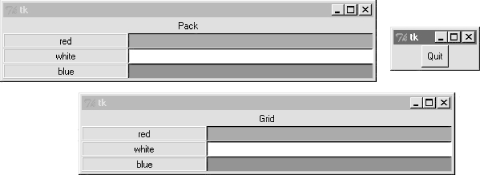
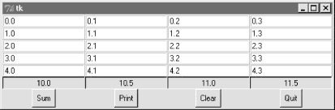

| I l@ve RuBoard |
|
8.6 GridsSo far, we've been arranging widgets in displays by calling their pack methods -- an interface to the packer geometry manager in Tkinter. This section introduces grid, the most commonly used alternative to the packer. As we learned earlier, Tkinter geometry managers work by arranging child widgets within a parent container widget (parents are typically Frames or top-level windows). When we ask a widget to pack or grid itself, we're really asking its parent to place it among its siblings. With pack, we provide constraints and let the geometry manager lay out widgets appropriately. With grid, we arrange widgets in rows and columns in their parent, as though the parent container widget was a table. Gridding is an entirely distinct geometry management system in Tkinter. In fact, at this writing pack and grid are mutually exclusive for widgets that have the same parent -- within a given parent container, we can either pack widgets or grid them, but not both. That makes sense, if you realize that geometry managers do their jobs at parents, and a widget can only be arranged by one geometry manager. At least within one container, though, that means that you must pick either grid or pack and stick with it. So why grid, then? In general, grid is handy for laying out form-like displays; arranging input fields in row/column fashion can be at least as easy as laying out the display with nested frames. As we'll see, though, grid doesn't offer substantial code or complexity savings compared to equivalent packer solutions in practice, especially when things like resizability are added to the GUI picture. In other words, the choice between the two layout schemes is largely one of style, not technology. 8.6.1 Grid BasicsLet's start off with the basics; Example 8-17 lays out a table of Labels and Entry fields -- widgets we've already met. Here, though, they are arrayed on a grid. Example 8-17. PP2E\Gui\Tour\Grid\grid1.pyfrom Tkinter import *
colors = ['red', 'green', 'orange', 'white', 'yellow', 'blue']
r = 0
for c in colors:
Label(text=c, relief=RIDGE, width=25).grid(row=r, column=0)
Entry(bg=c, relief=SUNKEN, width=50).grid(row=r, column=1)
r = r+1
mainloop()
When run, this script creates the window shown in Figure 8-25, pictured with data typed into a few of the input fields. Once again, this book won't do justice to the colors displayed on the right, so you'll have to stretch your imagination a little (or run this script on a computer of your own). Figure 8-25. The grid geometry manager in pseudo-living colorThis is a classic input form layout: labels on the left describe data to type into entry fields on the right. Just for fun, this script displays color names on the left and the entry field of the corresponding color on the right. It achieves its nice table-like layout with the following two lines: Label(...).grid(row=r, column=0)
Entry(...).grid(row=r, column=1)
From the perspective of the container window, the label is gridded to column in the current row number (a counter that starts at 0), and the entry is placed in column 1. The upshot is that the grid system lays out all the labels and entries in a two-dimensional table automatically, with evenly sized columns large enough to hold the largest item in each column. 8.6.2 grid Versus packTime for some compare-and-contrast: Example 8-18 implements the same sort of colorized input form with both grid and pack, to make it easy to see the differences between the two approaches. Example 8-18. PP2E\Gui\Tour\Grid\grid2.py# add equivalent pack window
from Tkinter import *
colors = ['red', 'green', 'yellow', 'orange', 'blue', 'navy']
def gridbox(parent):
r = 0
for c in colors:
l = Label(parent, text=c, relief=RIDGE, width=25)
e = Entry(parent, bg=c, relief=SUNKEN, width=50)
l.grid(row=r, column=0)
e.grid(row=r, column=1)
r = r+1
def packbox(parent):
for c in colors:
f = Frame(parent)
l = Label(f, text=c, relief=RIDGE, width=25)
e = Entry(f, bg=c, relief=SUNKEN, width=50)
f.pack(side=TOP)
l.pack(side=LEFT)
e.pack(side=RIGHT)
if __name__ == '__main__':
root = Tk()
gridbox(Toplevel())
packbox(Toplevel())
Button(root, text='Quit', command=root.quit).pack()
mainloop()
The basic label and entry widgets are created the same way by these two functions, but they are arranged in very different ways:
The difference in the amount code required for each scheme is roughly a wash: the pack scheme must create a Frame per row, but the grid scheme must keep track of the current row number. Running the script makes the windows in Figure 8-26. Figure 8-26. Equivalent grid and pack windows8.6.3 Combining grid and packNotice that the prior script passes a brand new Toplevel to each form constructor function, so that the grid and pack versions wind up in distinct top-level windows. Because the two geometry managers are mutually exclusive within a given parent, we have to be careful not to mix them carelessly. For instance, Example 8-19 is able to put both the packed and gridded widgets on the same window, but only by isolating each in its own Frame container widget. Example 8-19. PP2E\Gui\Tour\Grid\grid2-same.py################################################################## # can't grid and pack in same parent container (e.g., root window) # but can mix in same window if done in different parent frames; ################################################################## from Tkinter import * from grid2 import gridbox, packbox root = Tk() Label(root, text='Grid:').pack() frm = Frame(root, bd=5, relief=RAISED); frm.pack(padx=5, pady=5) gridbox(frm) Label(root, text='Pack:').pack() frm = Frame(root, bd=5, relief=RAISED); frm.pack(padx=5, pady=5) packbox(frm) Button(root, text='Quit', command=root.quit).pack() mainloop() We get a composite window when this runs with two forms that look identical (Figure 8-27), but the two nested frames are actually controlled by completely different geometry managers. Figure 8-27. grid and pack in the same windowOn the other hand, the sort of code in Example 8-20 fails badly, because it attempts to use pack and grid at the same parent -- only one geometry manager can be used on any one parent. Example 8-20. PP2E\Gui\Tour\Grid\grid2-fails.py################################################################## # FAILS-- can't grid and pack in same parent (root window) ################################################################## from Tkinter import * from grid2 import gridbox, packbox root = Tk() gridbox(root) packbox(root) Button(root, text='Quit', command=root.quit).pack() mainloop() This script passes the same parent (the top-level window) to each function in an effort to make both forms appear in one window. It also utterly hangs the Python process on my machine, without ever showing any windows at all (on Windows 98, I had to resort to Ctrl-Alt-Delete to kill it). Geometry manager combinations can be subtle until you get the hang of this; to make this example work, for instance, we simply need to isolate the grid box in a parent container all its own to keep it away from the packing going on in the root window: root = Tk() frm = Frame(root) frm.pack() # this works gridbox(frm) # gridbox must have its own parent in which to grid packbox(root) Button(root, text='Quit', command=root.quit).pack() mainloop() Again, today you must either pack or grid within one parent, but not both. It's possible that this restriction may be lifted in the future, but seems unlikely given the disparity in the two window manager schemes; try your Python to be sure. 8.6.4 Making Gridded Widgets ExpandableAnd now, some practical bits. The grids we've seen so far are fixed in size; they do not grow when the enclosing window is resized by a user. Example 8-21 implements an unreasonably patriotic input form with both grid and pack again, but adds the configuration steps needed to make all widgets in both windows expand along with their window on a resize. Example 8-21. PP2E\Gui\Tour\Grid\grid3.py# add label and resizing
from Tkinter import *
colors = ['red', 'white', 'blue']
def gridbox(root):
Label(root, text='Grid').grid(columnspan=2)
r = 1
for c in colors:
l = Label(root, text=c, relief=RIDGE, width=25)
e = Entry(root, bg=c, relief=SUNKEN, width=50)
l.grid(row=r, column=0, sticky=NSEW)
e.grid(row=r, column=1, sticky=NSEW)
root.rowconfigure(r, weight=1)
r = r+1
root.columnconfigure(0, weight=1)
root.columnconfigure(1, weight=1)
def packbox(root):
Label(root, text='Pack').pack()
for c in colors:
f = Frame(root)
l = Label(f, text=c, relief=RIDGE, width=25)
e = Entry(f, bg=c, relief=SUNKEN, width=50)
f.pack(side=TOP, expand=YES, fill=BOTH)
l.pack(side=LEFT, expand=YES, fill=BOTH)
e.pack(side=RIGHT, expand=YES, fill=BOTH)
root = Tk()
gridbox(Toplevel(root))
packbox(Toplevel(root))
Button(root, text='Quit', command=root.quit).pack()
mainloop()
When run, this script makes the scene in Figure 8-28. It builds distinct pack and grid windows again, with entry fields on the right colored red, white, and blue (or for readers not working along on a computer: gray, white, and an arguably darker gray). Figure 8-28. grid and pack windows before resizingThis time, though, resizing both windows with mouse drags makes all their embedded labels and entry fields expand along with the parent window, as we see in Figure 8-29. Figure 8-29. grid and pack windows resized 8.6.4.1 Resizing in gridsNow that I've shown you what these windows do, I need to explain how they do it. We learned earlier how to make widgets expand with pack: we use expand and fill options to increase space allocations and stretch into them. To make expansion work for widgets arranged by grid, we need to use different protocols: rows and columns must be marked with a weight to make them expandable, and widgets must also be made sticky so that they are stretched within their allocated grid cell:
Different combinations of row and column weights and sticky settings generate different resize effects. For instance, deleting the columnconfig lines in the grid3 script makes the display expand vertically but not horizontally. Try changing some of these settings yourself to see the sorts of effects they produce. 8.6.4.2 Spanning columns and rowsThere is one other big difference in how the grid3 script configures its windows. Both the grid and pack windows display a label on the top that spans the entire window. For the packer scheme, we simply make a label attached to the top of the window at large (remember, side defaults to TOP): Label(root, text='Pack').pack() Because this label is attached to the window's top before any row frames are, it appears across the entire window top as expected. But laying out such a label takes a bit more work in the rigid world of grids; the first line of the grid implementation function does it like this: Label(root, text='Grid').grid(columnspan=2) To make a widget span across multiple columns, we pass grid a columnspan option with spanned-column count. Here, it just specifies that the label at the top of the window should stretch over the entire window -- across both the label and entry columns. To make a widget span across multiple rows, pass a rowspan option instead. The regular layouts of grids can be either an asset or a liability, depending on how regular your user interface will be; these two span settings let you specify exceptions to the rule when needed. So which geometry manager comes out on top here? When resizing is factored in, as in this script, gridding actually becomes slightly more complex (in fact, gridding requires three extra lines of code here). On the other hand, grid is nice for simple forms, and your grids and packs may vary. 8.6.5 Laying Out Larger Tables with gridSo far, we've been building two-column arrays of labels and input fields. That's typical of input forms, but the Tkinter grid manager is capable of configuring much grander matrixes. For instance, Example 8-22 builds a five-row by four-column array of labels, where each label simply displays its row and column number (row.col). When run, the window in Figure 8-30 appears on screen. Example 8-22. PP2E\Gui\Tour\Grid\grid4.py# simple 2d table
from Tkinter import *
for i in range(5):
for j in range(4):
l = Label(text='%d.%d' % (i, j), relief=RIDGE)
l.grid(row=i, column=j, sticky=NSEW)
mainloop()
Figure 8-30. A 5 x 4 array of coordinates labelsIf you think this is starting to look like it might be a way to program spreadsheets, you may be on to something. Example 8-23 takes this idea a bit further, and adds a button that prints the table's current input field values to the stdout stream (usually, to the console window). Example 8-23. PP2E\Gui\Tour\Grid\grid5.py# 2d table of input fields
from Tkinter import *
rows = []
for i in range(5):
cols = []
for j in range(4):
e = Entry(relief=RIDGE)
e.grid(row=i, column=j, sticky=NSEW)
e.insert(END, '%d.%d' % (i, j))
cols.append(e)
rows.append(cols)
def onPress():
for row in rows:
for col in row:
print col.get(),
print
Button(text='Fetch', command=onPress).grid()
mainloop()
When run, this script creates the window in Figure 8-31, and saves away all the grid's entry field widgets in a two-dimensional list of lists. When its Fetch button is pressed, the script steps through the saved list of lists of entry widgets, to fetch and display all the current values in the grid. Here is the output of two Fetch presses -- one before I made input field changes, and one after: C:\...\PP2E\Gui\Tour\Grid>python grid5.py 0.0 0.1 0.2 0.3 1.0 1.1 1.2 1.3 2.0 2.1 2.2 2.3 3.0 3.1 3.2 3.3 4.0 4.1 4.2 4.3 0.0 0.1 0.2 42 1.0 1.1 1.2 43 2.0 2.1 2.2 44 3.0 3.1 3.2 45 4.0 4.1 4.2 46 Figure 8-31. A larger grid of input fieldsNow that we know how to build and step through arrays of input fields, let's add a few more useful buttons. Example 8-24 adds another row to display column sums, and buttons to clear all fields to zero and calculate column sums. Example 8-24. PP2E\Gui\Tour\Grid\grid5b.py# add column sums, clearing
from Tkinter import *
numrow, numcol = 5, 4
rows = []
for i in range(numrow):
cols = []
for j in range(numcol):
e = Entry(relief=RIDGE)
e.grid(row=i, column=j, sticky=NSEW)
e.insert(END, '%d.%d' % (i, j))
cols.append(e)
rows.append(cols)
sums = []
for i in range(numcol):
l = Label(text='?', relief=SUNKEN)
l.grid(row=numrow, col=i, sticky=NSEW)
sums.append(l)
def onPrint():
for row in rows:
for col in row:
print col.get(),
print
print
def onSum():
t = [0] * numcol
for i in range(numcol):
for j in range(numrow):
t[i]= t[i] + eval(rows[j][i].get())
for i in range(numcol):
sums[i].config(text=str(t[i]))
def onClear():
for row in rows:
for col in row:
col.delete('0', END)
col.insert(END, '0.0')
for sum in sums:
sum.config(text='?')
import sys
Button(text='Sum', command=onSum).grid(row=numrow+1, column=0)
Button(text='Print', command=onPrint).grid(row=numrow+1, column=1)
Button(text='Clear', command=onClear).grid(row=numrow+1, column=2)
Button(text='Quit', command=sys.exit).grid(row=numrow+1, column=3)
mainloop()
Figure 8-32 shows this script at work summing up four columns of numbers; to get a different size table, change the numrow and numcol variables at the top of the script. Figure 8-32. Adding column sumsAnd finally, Example 8-25 is one last extension that is coded as a class for reusability, and adds a button to load the table from a data file. Data files are assumed to be coded as one line per row, with whitespace (spaces or tabs) between each column within a row line. Loading a file of data automatically resizes the table GUI to accommodate the number of columns in the table. Example 8-25. PP2E\Gui\Tour\Grid\grid5c.py# recode as an embeddable class
from Tkinter import *
from PP2E.Gui.Tour.quitter import Quitter # reuse, pack, and grid
class SumGrid(Frame):
def __init__(self, parent=None, numrow=5, numcol=5):
Frame.__init__(self, parent)
self.numrow = numrow # I am a frame container
self.numcol = numcol # caller packs or grids me
self.makeWidgets(numrow, numcol) # else only usable one way
def makeWidgets(self, numrow, numcol):
self.rows = []
for i in range(numrow):
cols = []
for j in range(numcol):
e = Entry(self, relief=RIDGE)
e.grid(row=i+1, column=j, sticky=NSEW)
e.insert(END, '%d.%d' % (i, j))
cols.append(e)
self.rows.append(cols)
self.sums = []
for i in range(numcol):
l = Label(self, text='?', relief=SUNKEN)
l.grid(row=numrow+1, col=i, sticky=NSEW)
self.sums.append(l)
Button(self, text='Sum', command=self.onSum).grid(row=0, column=0)
Button(self, text='Print', command=self.onPrint).grid(row=0, column=1)
Button(self, text='Clear', command=self.onClear).grid(row=0, column=2)
Button(self, text='Load', command=self.onLoad).grid(row=0, column=3)
Quitter(self).grid(row=0, column=4) # fails: Quitter(self).pack()
def onPrint(self):
for row in self.rows:
for col in row:
print col.get(),
print
print
def onSum(self):
t = [0] * self.numcol
for i in range(self.numcol):
for j in range(self.numrow):
t[i]= t[i] + eval(self.rows[j][i].get())
for i in range(self.numcol):
self.sums[i].config(text=str(t[i]))
def onClear(self):
for row in self.rows:
for col in row:
col.delete('0', END)
col.insert(END, '0.0')
for sum in self.sums:
sum.config(text='?')
def onLoad(self):
import string
from tkFileDialog import *
file = askopenfilename()
if file:
for r in self.rows:
for c in r: c.grid_forget()
for s in self.sums:
s.grid_forget()
filelines = open(file, 'r').readlines()
self.numrow = len(filelines)
self.numcol = len(string.split(filelines[0]))
self.makeWidgets(self.numrow, self.numcol)
row = 0
for line in filelines:
fields = string.split(line)
for col in range(self.numcol):
self.rows[row][col].delete('0', END)
self.rows[row][col].insert(END, fields[col])
row = row+1
if __name__ == '__main__':
import sys
root = Tk()
root.title('Summer Grid')
if len(sys.argv) != 3:
SumGrid(root).pack() # .grid() works here too
else:
rows, cols = eval(sys.argv[1]), eval(sys.argv[2])
SumGrid(root, rows, cols).pack()
mainloop()
Notice that this module's SumGrid class is careful not to either grid or pack itself. In order to be attachable to containers where other widgets are being gridded or packed, it leaves its own geometry management ambiguous, and requires callers to pack or grid its instances. It's okay for containers to pick either scheme for their own children, because they effectively seal off the pack-or-grid choice. But attachable component classes that aim to be reused under both geometry managers cannot manage themselves, because they cannot predict their parent's policy. This is a fairly long example that doesn't say much else about gridding or widgets in general, so I'll leave most of it as suggested reading and just show what it does. Figure 8-33 shows the initial window created by this script after changing the last column and requesting a sum. Figure 8-33. Adding data file loadsBy default, the class makes the 5-by-5 grid here, but we can pass in other dimensions to both the class constructor and the script's command line. When you press the Load button, you get the standard file selection dialog we met earlier on this tour (Figure 8-34). Figure 8-34. Opening a data file for SumGridData file grid-data1.txt contains seven rows and six columns of data: C:\...\PP2E\Gui\Tour\Grid>type grid5-data1.txt 1 2 3 4 5 6 1 2 3 4 5 6 1 2 3 4 5 6 1 2 3 4 5 6 1 2 3 4 5 6 1 2 3 4 5 6 1 2 3 4 5 6 Loading this into our GUI makes the dimensions of the grid change accordingly -- the class simply reruns its widget construction logic after erasing all the old entry widgets with the grid_forget method.[3] Figure 8-35 captures the scene after a file load.
Figure 8-35. Data file loaded, displayed, and summedData file grid5-data2.txt has the same dimensions, but contains expressions in two of its columns, not just simple numbers. Because this script converts input field values with the Python eval built-in function, any Python syntax will work in this table's fields, as long as it can be parsed and evaluated within the scope of the onSum method: C:\...\PP2E\Gui\Tour\Grid>type grid5-data2.txt
1 2 3 2*2 5 6
1 3-1 3 2<<1 5 6
1 5%3 3 pow(2,2) 5 6
1 2 3 2**2 5 6
1 2 3 [4,3][0] 5 6
1 {'a':2}['a'] 3 len('abcd') 5 6
1 abs(-2) 3 eval('2+2') 5 6
Summing these fields runs the Python code they contain, as seen in Figure 8-36. This can be a powerful feature; imagine a full-blown spreadsheet grid, for instance -- field values could be Python code "snippets" that compute values on the fly, call functions in modules, even download current stock quotes over the Internet with tools we'll meet in the next part of this book. It's also a potential dangerous tool -- a field might just contain an expression that erases your hard drive! If you're not sure what expressions may do, either don't use eval (convert with more limited built-in functions like int and float instead), or see Chapter 15 for details on the Python rexec restricted-execution mode module. Figure 8-36. Python expressions in the data and tableOf course, this still is nowhere near a true spreadsheet program; further mutations towards that goal are left as exercises. I should also point out that there is more to gridding than we have time to present fully here. For instance, by creating subframes that have grids of their own, we can build up more sophisticated layouts in much the same way as nested frames arranged with the packer. For now, let's move on to one last widget survey topic. |
| I l@ve RuBoard |
|